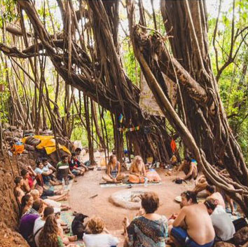
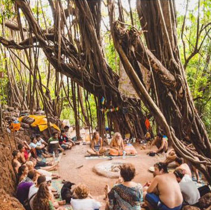

+91 74996 65426


 



💵 Excursion price:
📠Candolim, Calangute, Baga, Anjuna, Vagator, Siolim - 40$ per person.
📠Morjim, Ashvem, Mandrem - 40$ per person.
📠Arambol - 40$ per person
👦 Children under 12 years old - $ 25.
👼 Children under 5 years old - free of charge (without a seat, in the hands of parents).
ⳠС 8:00 до 18:00. Time in travel - 30 minutes.
In the program:
✅ Crocodiles: in the depths of the neighboring state of Maharashtra, in the wild you watch the life of these reptiles 2m or more🗿🐊🐊🐊🗿🐊🐊🐊
✅ The sacred Banyan tree on which flying Foxes sleep during the day. 🦇⚡
✅ Temple of all religions. Unique temple with an unusual design and Shivalingam who is wrapped in 25,000 Rudraksh! Powerful source
energy at which you will ask for spiritual strength! 🚩
✅ Paradise Beach. Freedom Beach. Beach of Love. This tropical beach is strong
different from the beaches of Goa. Very clean sea, very few people, and not only cows and dogs, but also camels and horses roam the crisp white sand! The beach has earned its name due to the ability to retire on the ocean, and the noisy merchants and beggars familiar to Goa on Paradise Beach are absent as a species. 💞🗽🌀
✅ Fort Rady - an abandoned, dilapidated fort, completely overgrown with jungle, a clear example of the greatness of nature, how it is restored after the presence of man. All buildings are covered with tree roots. A mystical, incredible place of tranquility, solitude, meditation. Awesome views and a great photo shoot! 🌊🌞🌴
✅ Ganesha Temple with the ceremony of offering, cleansing and receiving blessings from the Priest, Tying on the wrists of a thread for good luck; ⛪
✅ Fort Teracol - the northernmost fortress of Goa. In historical memory is a symbol of the struggle for independence; 💒
✅ Quiet, not crowded beach of Karim, the most northern beach in Goa. The beach shore is decorated not only with palm trees, but also with numerous pine trees. A distinctive feature of this beach is the complete silence around - sounds from the ferry to Maharashtra (neighboring state) do not reach here, where you will go on a barge across the river. 🚢 по (according to the situation, depending on the tides).
✅ Park of exotic flowers and plants with elements of landscape art. In addition to tropical plants, here you can meet many others that are not typical of these latitudes, enjoy the tranquility and coolness in a cozy park and take great photos! 🌺🌵🌼ğŸ€
✅ Juice center. And the last stop on the way home will be in the popular Juice Center, where you can enjoy fresh juices and salads and beautiful views of the Chapora River. 🍉🍓🍏
📌 The price includes:
✅Comfortable transport with air conditioning;
✅ Services of the English guide;
✅ Fresh juice and fruit salad at the
Juice Center. 🍏🍊🍎🍐🍉
💠What to bring with you: passport, comfortable shoes and clothes, pareo (cover your shoulders and knees when visiting temples, money for personal expenses.
👩🧑🧑👩 Discounts for a group
👼 Children under 5 years old - free of charge (without a seat, in the hands of parents).
Accepting bitcoin:

3Kznb8Z4skuUZp6rJJTKG91UMz9jn42Yno